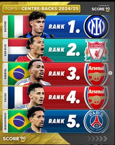
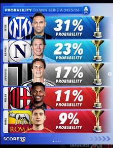
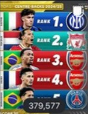
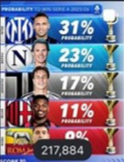
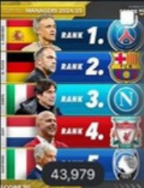
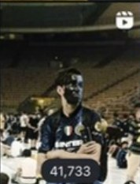
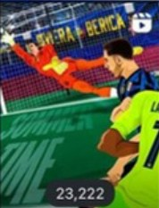
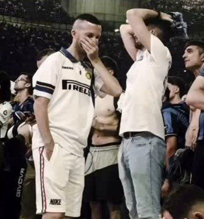

How a student team analysed and grew @fansnerazzurri, an unofficial Inter Milan fan hub with 15K followers, for the Online Reputation Management class at Kyungsung University.
0Reach surge (deck key takeaway)
0Reach / impressions · target 300K
0Engagement rate · target 3.0%
0Accounts engaged (+204%)
Context
Fansnerazzurri is an unofficial, Indonesia-focused Inter Milan fan page, "for fans, by fans", running since 2013.
The brief: boost brand visibility and engagement, and position the page as a trusted authority in its niche and a high-engagement community. The team tracked follower growth, content reach and virality, audience engagement and monetization readiness.
Client
@fansnerazzurri (Instagram)
Class
Online Reputation Management · Rian Harseno
Duration
About two months (spring 2025); measured period in the report: May 6 – June 16, 2025 (41 days)
My role
Project Manager & team lead: led the six-person Iqro team, set the strategy and targets, coordinated content planning and posting, and owned the performance reporting.
Audience
Who the page speaks to, from Instagram insights.
Age
Gender & cities
Most active 6–9 PM; least active overnight (12–6 AM). Working-age, predominantly male, urban (Jakarta / Tangerang).
Strategy
Audit the accountMap the audience, posting rhythm and what already performs.
Benchmark a competitorInter Club Indonesia: +69 followers/day and 72 posts/month vs FN's +8/day and 34 posts/month.
Lean into timely, emotional contentRankings, title-odds graphics and match-moment posts built for the Home feed — e.g. the post-UCL-final loyalty post.
Measure against targetsFollowers, engagement rate and impressions, before vs target vs after.
Content pillars
Match-day content & breaking news
Rankings & data graphics
Exclusive fan perspective
Emotional / loyalty moments
FN merch store
Results
Every figure below is taken from the team's final report.
Before → Target → After
Growth vs previous period
Views by content type
Who saw it: non-followers
Strong discoverability — but only 25.2% of viewers followed. Net gain: 304 followers (+2.0%).
Competitor benchmark
Top posts by views (profile grid)
Top posts

May 20 · 10:16 PM · #1 post
"INTER MILAN RANKINGS!"
379,587views
97.1%non-followers
29,546interactions
4,736profile visits
372,723 views from the Home feed, 3,918 from Explore.

June 6 · 9:00 PM
"31% probability to lift the Serie A trophy"
219,251views
95.6%non-followers
11,796interactions
~$11.94earnings
214,774 views from Home, 2,755 from Explore.

379,577

217,884

43,979

41,733

23,222

Post-UCL-final loyalty post
Grid counters as shown on the profile (slide 6); detailed per-post insights above.
Timeline
May 6, 2025Data period startsBaseline: 14,745 followers, 1.5% ER, 79K impressions/month
May 20#1 post goes viral"Inter Milan Rankings" — 379,587 views
May 30Peak follower day+46 followers
June 6Serie A odds post219,251 views
June 16, 2025Data period ends · report delivered15,071 followers, 3.2% ER, 904K reach
Learnings
"Success comes from balancing creativity with analytics, and authenticity with trends."
Engagement: achieved3.2% ER vs a 3.0% target, driven by high-engagement posts.
Reach: crushed904K vs a 300K target, through algorithmic amplification.
Followers: just short15,071 vs a 15,500 target — but higher-quality, active followers. Converting non-followers remains the priority.